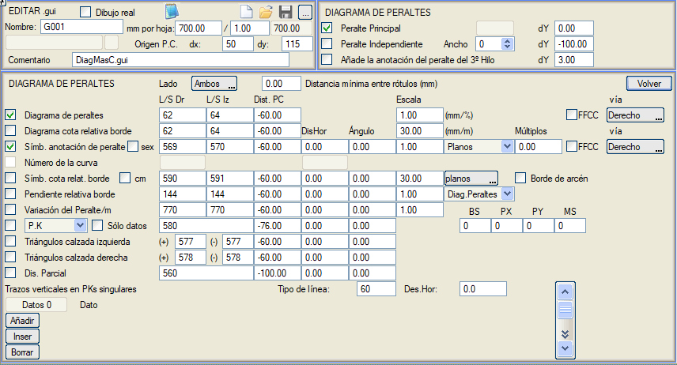
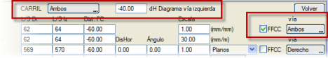
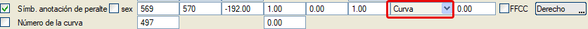
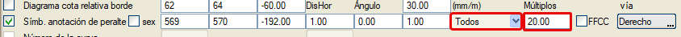
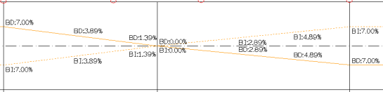

| |
|
BOYKESİT PAFTALARI İÇİN ŞABLONLAR: DEVER DİYAGRAMLARI
|
Bu diyalog kutusundan, boykesit paftalarındaki dever diyagramını ayarlamak mümkündür. Yapılandırma seçenekleri şunlardır: 
Bağımsız Dever: Eğer Bağımsız Genişlikler tanımlanmışsa ve genişliklerden herhangi birinin burada tanımlanmış Bağımsız Deveri varsa, o zaman bu dever kanunu, ana deverin yanı sıra veya iki kanundan biri bilgi bandında çizilebilir. Ana veya bağımsız kanunun çizimi için bir dikey öteleme tanımlanır ve ikincisi için bağımsız devere sahip olan şeridin (Genişlik) numarası tanımlanır. 3. Şeridin dever etiketini ekle: bu seçenek üçüncü şeride karşılık gelen deveri etiketlemeyi sağlar. Etiketler arası minimum mesafe: Kavşaklarda veya genişletme ve iyileştirme projelerinde türetilen dever kanunlarında çok sayıda verinin üst üste binmesini önlemek için, verilen mesafeden daha yakın olan KM, dever vb. değerlerini etiketlemez. Dever diyagramı kutucuğu etkinleştirildiğinde, bu diyagram sağ ve sol ayırt edilerek, belirtilen çizgi tipleriyle ve karşılaştırma düzlemine olan mesafede çizilir. Negatif bir çizgi tipi verilirse diyagram çizilmese de, Taraf değiştirilebilir butonu ile hangi tarafın gösterileceği tanımlanabilir; sağ, sol ve her ikisi arasında seçim yapılabilir. Eğer güzergahın başlangıcında sadece bir dever verisi tanımlanmışsa, tüm paftalar boyunca dever diyagramını çizebilmek için son kilometreye de aynı veri eklenir. Ayrıca, çizim ölçeğini de belirtmek gerekir: karayolları için % dever başına kağıt milimetresi (tipik bir ölçek 1'dir) veya demiryolları için mm dever başına kağıt milimetresi (uygun bir ölçek 0,05 veya 0,1 olabilir). Eğer bir demiryolu güzergahı söz konusuysa, Demiryolu kutucuğu işaretlenir. Bu, ölçeğin zaten belirtildiği gibi mm/mm'ye değişmesine neden olmasının yanı sıra, çift hat durumunda hangisinin gösterilmek istendiğini (sağ, sol veya her ikisi) belirtmeyi gerektirir, çünkü diyagramda hattaki iki rayın alçak raya göre kot farkları gösterilir. Bu nedenle bu durumda, belirtilen taraf, sağ, sol veya her iki hatta değil, sağ, sol veya her iki raya atıfta bulunur. Bütün bunlar, örneğin, S kurplarında ve ağırlık merkezi dengelemesinde demiryolları için dever diyagramında alçak ray ile kırmızı kot arasındaki kot farkını gözlemlemeyi sağlar. Kütüphaneyle birlikte verilen şablon ffcc02.gui, demiryolları için iyi bir örnektir. Çift hatlı demiryollarında bir dever diyagramı söz konusu olduğunda, Demiryolu kutucuğu etkinleştirildiğinde ve her iki hat için çizim seçildiğinde, sol hat için diyagram çizimini ayırmaya olanak tanıyan bir dikey öteleme verilebilir. Bu öteleme diyagramı, dever değerini, kenar eğimini, kilometreleri ve dikey çizgileri etkiler: 
Ayrıca, her biri için belirtilen tiple (negatif tipler çizilmemesine neden olur) ve belirtilen karşılaştırma düzlemine olan mesafede kenar kot farkı diyagramını göstermek de mümkündür. Bu durumda ölçek, kot farkı metresi başına kağıt milimetresi olarak ölçülür. Ardından, dever etiketlerinin ve kenar kot farkı etiketlerinin gösterilip gösterilmeyeceği belirtilir. Bu durumda, hem sağ hem de sol için kullanılacak sembol tipi belirtilecektir (negatif değerler gösterilmemesine neden olur). Bu tip, gösterilecek olanla tutarlı olmalıdır. Dolayısıyla, deverler için, karayolları durumunda sağ için 569 ve sol için 570 sembolleri uygunken, demiryolları söz konusu olduğunda, kullandığı farklı gösterim nedeniyle sağ ray için 538 ve sol ray için 639 kullanmak daha iyidir. Kenar kot farklarının etiketlenmesi 569 ve 570 etiketlerini kullanır ve cm cinsinden yapılabilir. Bu durumda cm kutucuğunu işaretlemek ve sırasıyla sağ ve sol kenar için 647 ve 648 tiplerini kullanmak yeterlidir; bu kutucuk işaretlendiğinde otomatik olarak bu tiplere geçiş yapılır. Kotun referans alınması için Banket kenarı kutucuğu da işaretlenebilir. Her iki durum için de bir yatay öteleme ve bir açı belirtilebilir. Ölçek konusunda ise, normalde dever diyagramının ölçeği ile dever sembollerinin ölçeği ve kenar kot farkı diyagramının ölçeği ile bu kotların sembollerinin ölçeği aynı mertebede olacaktır. Bu ölçek, sembolün boyutuna değil diyagramın genişliğine atıfta bulunur, bu nedenle diyagramınkinden farklı değerler, etiketlerin diyagrama göre dikey kaymalarına neden olacaktır. Bu semboller sadece sabit dever/kenar kot farkı kesimlerinin başlangıcını (seçenek düz) veya her veri noktasını (seçenek tümü) temsil edebilir. Ayrıca, dever etiketleri durumunda, dever işaretiyle birlikte yazılabilir ve diyagramda olduğu gibi, demiryolu olup olmadığı ve çift hat için hangi hattın verilerinin gösterilmek istendiği belirtilmelidir. Eğer kurp seçeneği seçilirse, dever sadece kurplarda gösterilecektir. Bu durumda deveri etiketlemek için referans kilometre, kurbun merkezidir. Bu durumda dever etiketine, kurp numarasını içeren başka bir sembol de eşlik edebilir. 
Dever geçişlerini, belirli bir değerin katlarına göre etiketleyebiliriz. Tümü veya Tümü işaretli seçenekleriyle kullanılabilir; veya Enterpolasyon seçeneği ile birleştirilerek başlangıç KM, bitiş KM ve belirtilen katlardaki değerleri dever etiket sembolü, KM/kazık no, ara mesafeler ve dikey çizgilerle birlikte göstermek için kullanılabilir. 

Dever, ondalık formatta veya derece, dakika ve saniye formatında gösterim için seçilen sembole bağlı olarak (demiryolları hariç) derece cinsinden de etiketlenebilir. 
KM'nin etiketlenmesi için 3 mod kabul edilir: KM/Kazık No/Kullanıcı KM. Böylece, veri noktalarının KM'si, kazık numarası veya Kullanıcı KM'si (KM eşitliklerinden türetilen KM), belirtilen karşılaştırma düzlemine olan mesafe, yatay öteleme ve açı ile temsil edilir. Eğer []Sadece veriler kutucuğu etkinleştirilirse, deverin sıfır değerinden geçtiği yerlerdeki etiketleme engellenir. Ayrıca, nokta tipine göre birkaç farklı sembolün kullanımını da tanımlayabiliriz:
Dever diyagramı üçgen şeklinde de olabilir. Bunun için program, üçgen şeklinde olan ve devere orantılı olarak çizilen semboller (varsayılan olarak sol için 577 ve sağ için 578) kullanır. Yine de program pozitif ve negatif dever arasında ayrım yapar, bu nedenle her taşıt yolu için pozitif ve negatif deverler için farklı bir sembol tanımlamak mümkündür. Bu durumda sembolün X ekseninde ölçek faktörü olmamalıdır (kütüphanedeki şablon ISP06_T.gui bu imkanı kullanır). Kullanılan semboller, belirtilen karşılaştırma düzlemine olan mesafeye göre yerleştirilecek ve onlara bir yatay öteleme ve bir açı da verilebilir. Karakteristik noktalar arasındaki ara mesafeleri etiketleme imkanı vardır. Kütüphanede bulunan ISP08T.gui dosyası bu seçeneği kullanır. Son olarak, kullanıcıya yatay güzergahın karakteristik kilometrelerinde dikey çizgiler grupları çizme imkanı sunulur. Çizgi tipini, gerekirse bir yatay ötelemeyi ve çizgilerin çizileceği başlangıç ve bitiş mesafelerini (karşılaştırma düzlemine göre) belirtmek yeterlidir. |